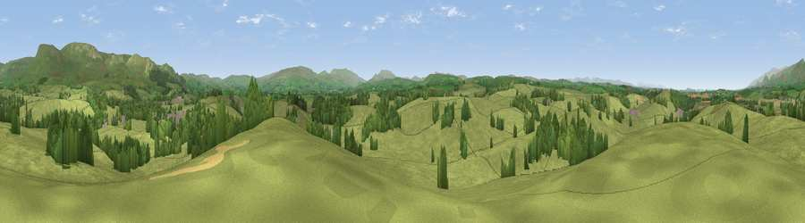

Sourlands Hill
#17673 in England · top 56% of its area beats it · near WarcopThe view, rendered

A 360° render of this exact spot computed from the terrain model, tree cover and land cover — summer colours, afternoon light, calibrated against photographs of famous viewpoints. Real trees, hedges and buildings will differ in detail.
The panorama
Grey silhouette: terrain skyline in each direction (720 bearings, Earth curvature and refraction included). Dashed green: skyline with trees (+15 m) and buildings (+8 m) as obstacles. Blue strip: how far the ground is visible on each bearing.
Where the view opens
Wedge length = distance to the farthest visible ground on that bearing (vegetation-aware). Rings at 10, 25 and 50 km.
What fills the view
87% grassland · 11% woodland ·
Angular shares of the visible panorama (visual magnitude), not map area. Landscape diversity 0.19 (0–1 Shannon).
Key numbers
More beautiful places nearby
The staircase of upgrades: each row has a higher view potential than everything closer. Driving times are estimates from straight-line distance, calibrated against real road routing — check an actual route before setting out.
| Place | Direction | Drive | Score |
|---|---|---|---|
| Trickle Banks | WNW · 2 km | ~5 min | 61.4 |
| Viewpoint near Brough | ENE · 5 km | ~11 min | 72.7 |
| Viewpoint near Hilton | NE · 5 km | ~12 min | 73.7 |
| Viewpoint near Hilton | NNE · 6 km | ~12 min | 75.2 |
| Viewpoint c10485_7606 | NE · 11 km | ~21 min | 75.6 |
| Mickle Fell | NE · 12 km | ~22 min | 75.8 |
| Viewpoint c10024_7603 | SSE · 15 km | ~27 min | 76.9 |
| Great Dun Fell | N · 17 km | ~30 min | 77.8 |
54.52951, -2.40882 · source: dobih hill · position refined by local search. Computed location — check access rights before visiting.